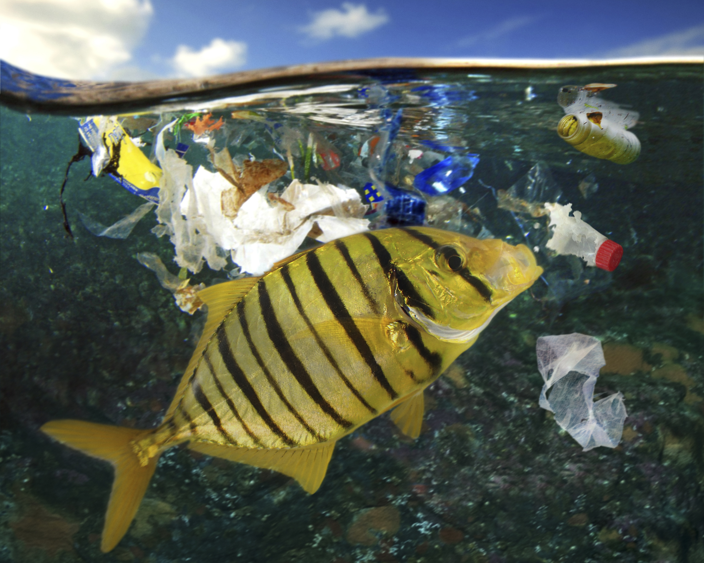
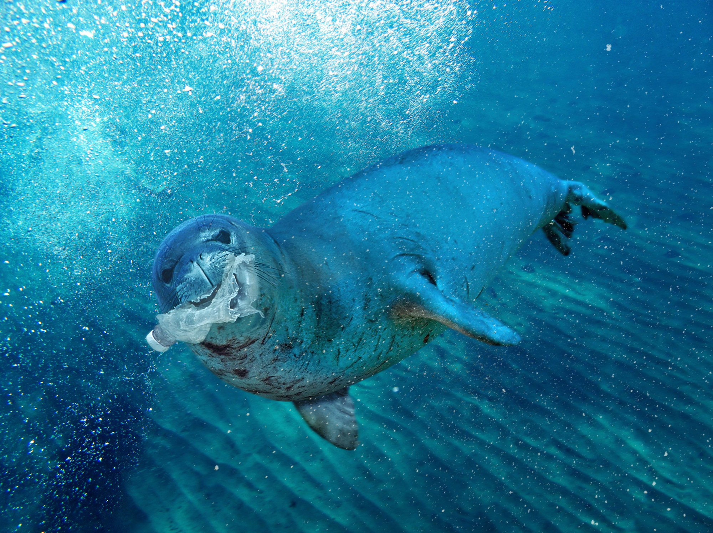
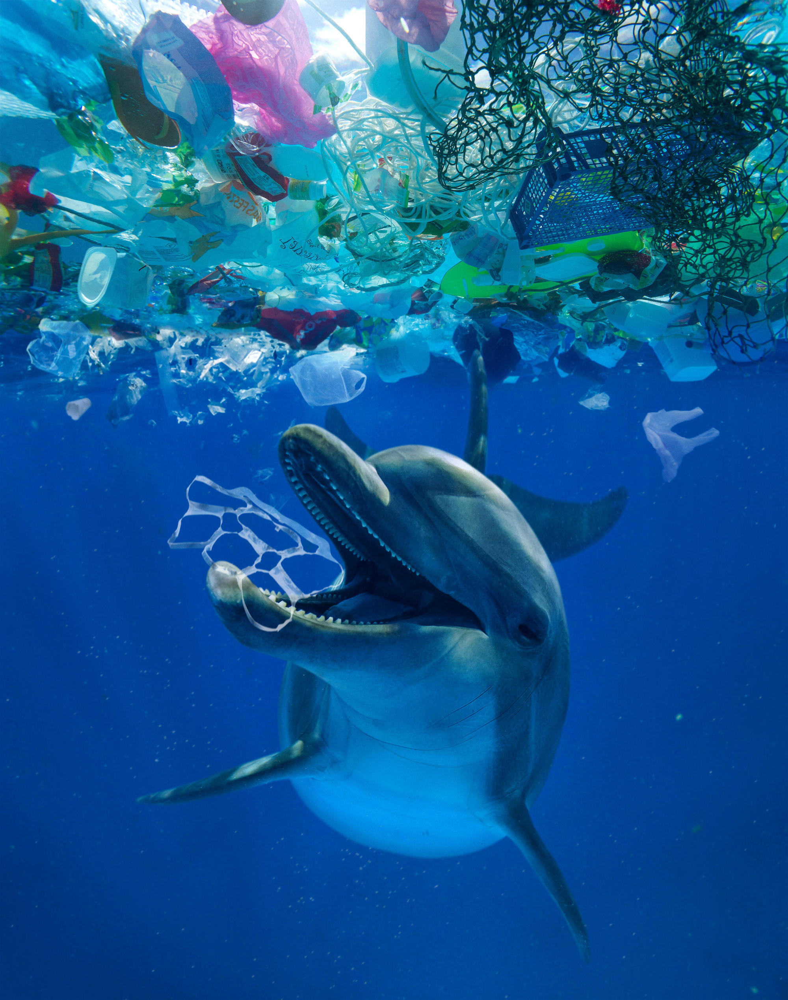
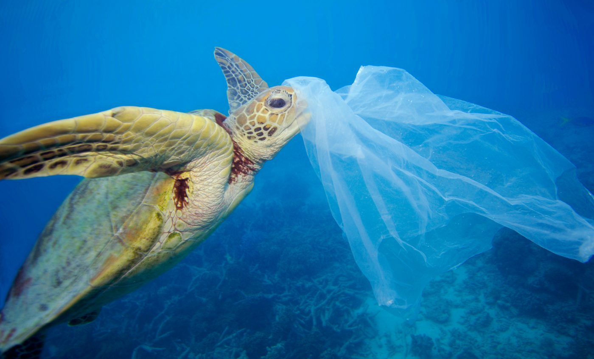
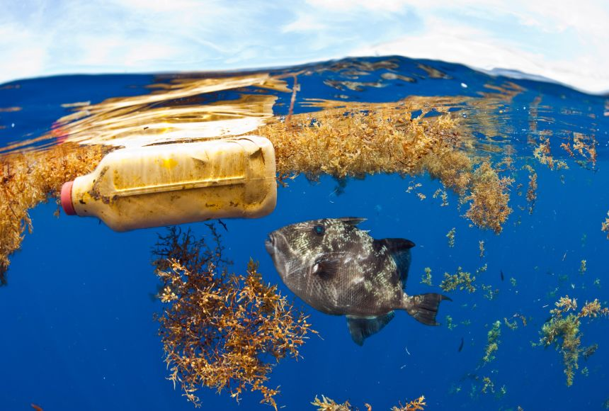

Golden Trevally Eating Plastic
A golden trevally (Gnathanodon speciosus) eating
trash on the ocean surface. Many sea animals are
being found with plastics and microplastics
in their stomachs.

Monk Seal with Plastic
A monk seal (Monachus monachus) with a plastic water bottle.
Marine animals often mistake plastic items with food.

Dolphin Eating Plastic
The image shows a dolphin in clear, blue water,
surrounded by plastic waste, highlighting ocean pollution.
It’s a stark reminder of human impact on marine life.

Sea Turtle Eating Plastic
A sea turtle eating a plastic bag.
Sea turtles often confuse plastic with their usual foods,
causing them to ingest the man-made material.

Ocean Bottle
A gray triggerfish studies (Balistes capriscus)
a plastic bottle that has drifted out into the ocean.
Plastic bottles such as this one do not decompose and
will remain in the ocean for hundreds of years.